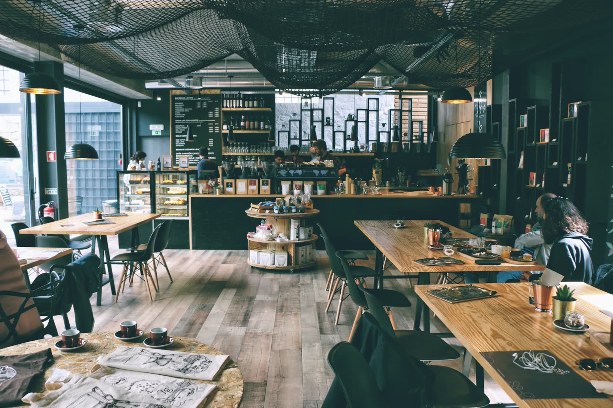

01 / 06
The Window
Coffee stains, dust, fingerprints, steam residue — glass holds the city's grime until it doesn't.
Even the cafe everyone used to love can quietly fade. We bring it back — glass, chrome, wood, and every corner general cleaning skips.
The Quiet Decline
Daily staff sweep the floor and wipe the counter — that's upkeep, not maintenance. None of it happens overnight. It happens over months of "good enough," until regulars start finding reasons to go elsewhere.

A cafe nobody's watching closely enough.
Foggy windows nobody flags in a shift handover.
Sticky tables that get a quick wipe, not a real clean.
Grout and corners that haven't been touched since opening day.
Chrome and fixtures dulling a little more with every "quick clean."
Why Lustre
The Six Chapters
Scroll to watch each surface turn from forgotten to flawless — the same rhythm we bring to your cafe, every visit.
Coffee stains, dust, fingerprints, steam residue — glass holds the city's grime until it doesn't.
Where coffee rings, crumbs, and hurried mornings meet their end.
The tight joints and quiet edges that routine cleaning always forgets.
The heart of the bar, restored from smudged chrome to a mirror.
Every step through the door deserves a shine underfoot.
This is what ready looks like.
See It For Yourself
Drag to reveal what a Lustre restoration actually changes — not a light dusting, a full reset.
Every surface assessed, dry debris and cobwebs cleared first.
Stains, residue, and buildup lifted with cafe-safe solutions.
Glass, chrome, and wood brought to a streak-free finish.
A final pass under your own lighting, so it gleams for guests.
Packages
Surfaces & floors
Best if you already have a strong daily in-house routine.
Full front + back of house
Recommended cadence: bi-weekly.
Deep restoration
Built for cafes catching up after months of general-only cleaning.
Questions
Daily upkeep keeps things from piling up; it isn't built to reverse buildup that's already set in — etched glass, dulled chrome, grout gone grey. That's a different job, done on a different schedule.
No — most restorations run before opening or after close. We work around your hours, not the other way around.
Cafe-safe, food-contact-appropriate solutions matched to each surface, so we don't dull chrome, strip sealant, or leave residue near food prep areas.
It depends on foot traffic and how long it's been. Most forgotten spaces need one deep restoration, then settle into Signature or Essential to maintain it.
Let us know your location when you book — we'll confirm coverage and timing.
Ready When You Are
One restoration. Then a rhythm that keeps it that way.